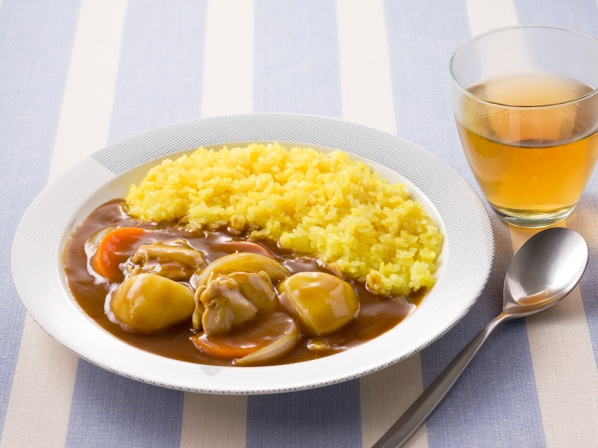

誰でも簡単 鶏カレーの作り方

材料
分量：４皿分
| 品目 |
分量 |
| カレールウ |
70g（1/2箱） |
| 鶏肉(もも) |
150g |
| 玉ねぎ |
中1個 |
| じゃがいも |
中1個 |
| にんじん |
中1/2本 |
| サラダ油 |
大さじ1 |
| 水 |
600ml |
作り方
- 鶏肉、じゃがいも、玉ねぎ、にんじんは適当な大きさに切る
- 厚手の鍋にサラダ油を熱し、(1)の鶏肉、じゃがいも、玉ねぎ、にんじんをよく炒める
- 水を加え、沸騰したら約15分ほどあくを取りながら、弱火～中火で材料が柔らかくなるまで煮込む
- いったん火を止め、カレールウを割り入れて溶かし、再び弱火でとろみがつくまで約10分ほど煮込む
出典：ハウス食品株式会社｜レシピ｜こくまろカレー https://housefoods.jp/recipe/rcp_00012871.html
ページの先頭へ戻る
一覧へ戻る
担当；石川智彦